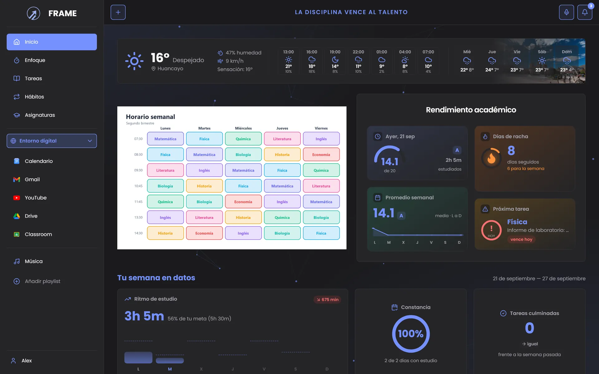
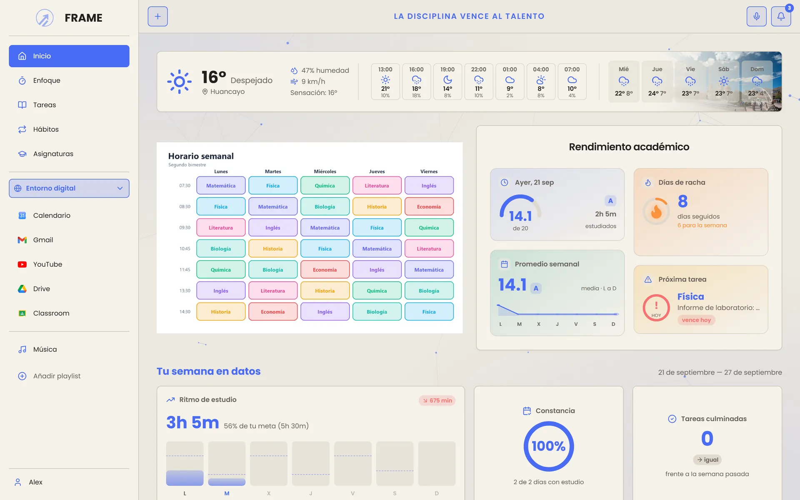
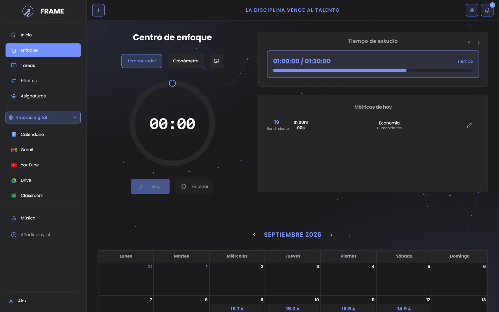
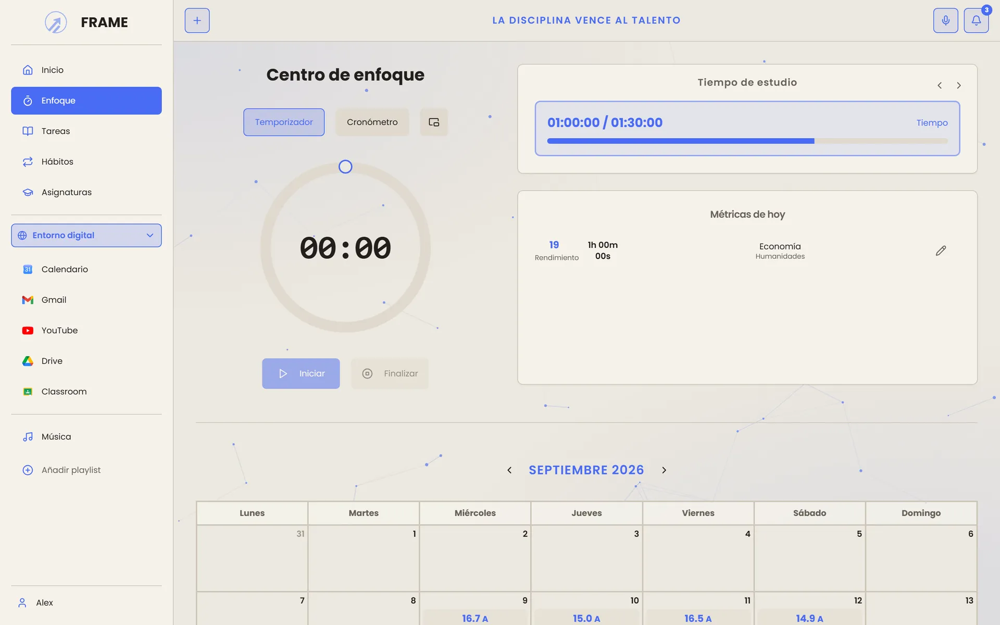
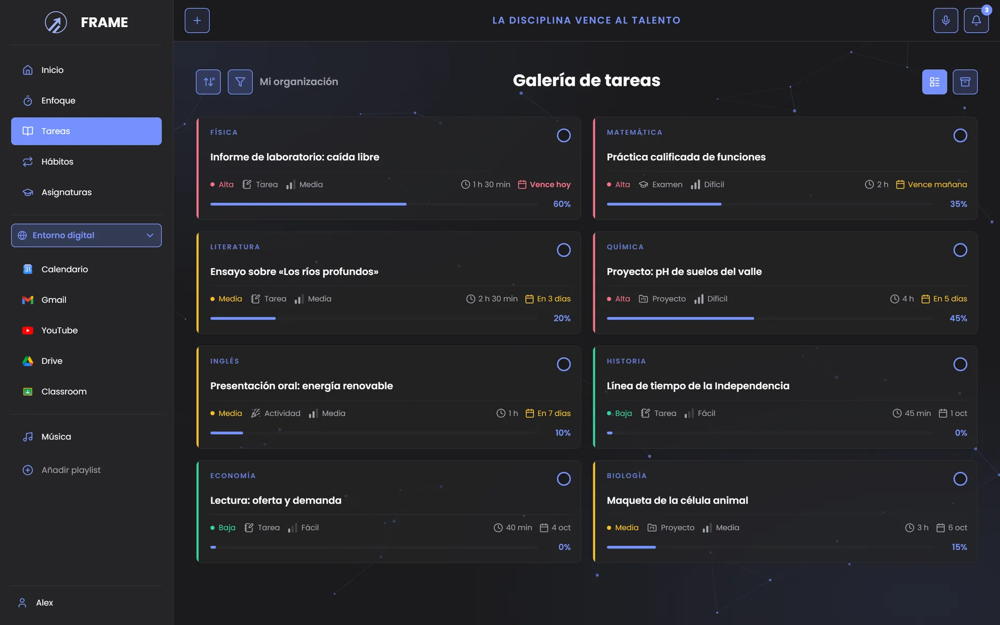
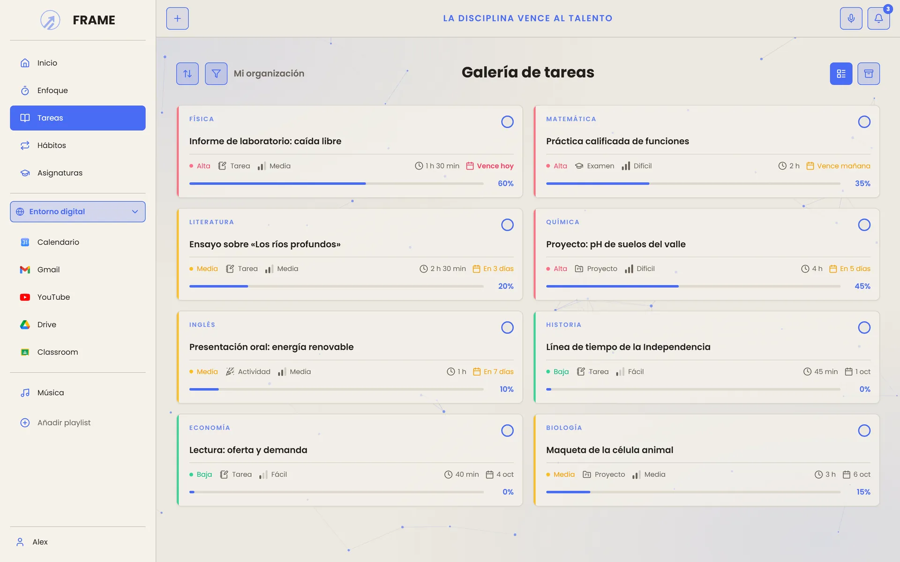
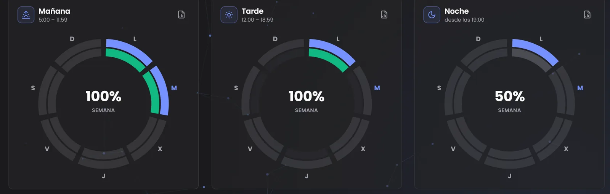
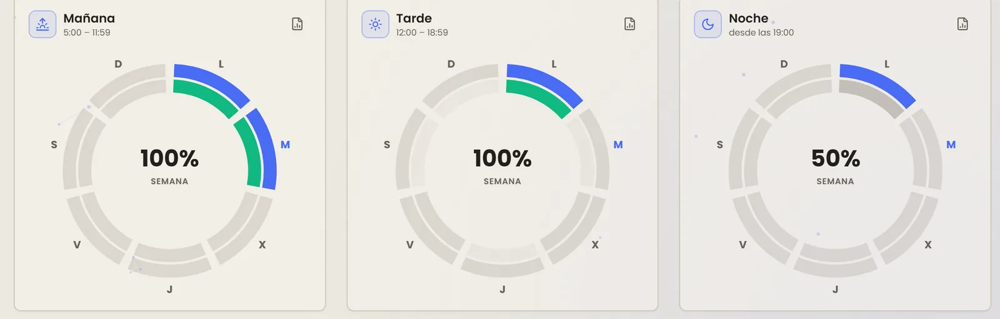
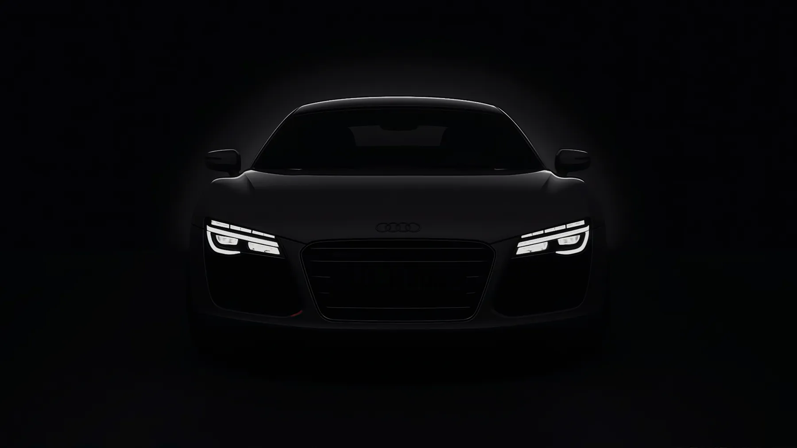
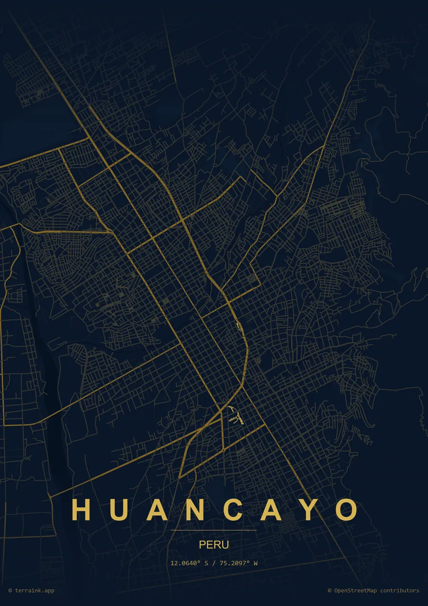

El problema
La fragmentación.
Un gestor de tareas, un cuaderno, un temporizador y un reproductor aparte: cada uno resuelve una parte y deja el resto sobre tus hombros.
Frame los integra en una sola interfaz, pensada para estudiar.
Asignaturas, tareas, sesiones de enfoque, hábitos, calendario, música y grabaciones en una sola aplicación de escritorio. Tus datos, primero en tu equipo.


Todo en un solo lugar
El problema
Un gestor de tareas, un cuaderno, un temporizador y un reproductor aparte: cada uno resuelve una parte y deja el resto sobre tus hombros.
Frame los integra en una sola interfaz, pensada para estudiar.
Funciones
Inicio
El clima por horas, tu horario, la próxima entrega y un pulso académico que calcula tu calificación del día, el promedio semanal y tu racha de constancia.
Enfoque
Temporizador o cronómetro, con una ventana flotante siempre visible. Al cerrar cada sesión valoras tu enfoque del 1 al 20 y Frame calcula tu calificación del día.


Tareas
Importancia, dificultad, tipo, tiempo estimado y fecha de entrega. El avance no se inventa: sube cuando trabajas en la tarea durante una sesión.


Hábitos
En mañana, tarde y noche, diarios o solo los días que tocan. Cada fase tiene sus anillos: un segmento por día, que se colorea al cumplirlo.


Y todavía hay más
Tu biblioteca local, con portadas oficiales y la letra que avanza con la canción. Se busca en cuatro fuentes, se comprueba que coincida con tu audio y queda guardada para verla sin conexión.
Ctrl + Shift + F y empieza a grabar al instante, desde cualquier pantalla.
General, rendimiento, pendientes y hábitos, en PDF, Word o Markdown.
Gmail, YouTube, Drive, Google Calendar y Classroom dentro de Frame, con tu sesión de siempre.
Profesores, tutores y auxiliares publican desde la web; tareas, recursos y comunicados llegan solos a Frame.
Local y sin conexión, o Google Calendar. Tus fechas de entrega aparecen solas.
Entra con tu correo o con Google y tu estado académico se replica entre equipos.

Ingeniería
Construida con Tauri y Rust: usa el motor web del propio Windows en lugar de cargar un navegador entero, y funciona completa sin conexión.
Seguridad y privacidad
Cada versión se firma criptográficamente. Frame solo acepta actualizaciones con la firma de VT Asvent, te avisa y se actualiza con tu permiso.
Tu música, tus grabaciones y tus imágenes nunca salen de tu computadora. El resto se respalda en tu cuenta, cifrado en tránsito.
Sin publicidad y sin venta de datos. Las métricas de uso son agregadas y nunca incluyen el contenido de tus tareas, notas ni grabaciones.
Verifica tu descarga
Abre PowerShell en tu carpeta de descargas y compara la huella con la publicada aquí. Si no coincide, no lo ejecutes.
Get-FileHash .\Frame-Setup.exe -Algorithm SHA256
Se publica junto a cada versión.
Detrás de Frame
VT Asvent es la entidad de desarrollo de software detrás de Frame, emprendida en Huancayo, Perú, para construir software de alto valor real. Frame es su primer producto, no el último.
«Software de alto valor real, no solo funcional.»

Preguntas frecuentes
Sí. Frame se descarga y se usa gratis, sin anuncios y sin funciones de pago.
Sí. Asignaturas, tareas, sesiones de enfoque, hábitos, calendario local, música ya descargada y grabaciones funcionan sin conexión. Internet solo hace falta para entrar a tu cuenta, respaldar, descargar música y usar los servicios de Google.
Ese aviso aparece con cualquier aplicación nueva que aún no tiene un certificado comercial. Elige «Más información» y luego «Ejecutar de todas formas». Si quieres total certeza, comprueba antes la huella SHA-256 del instalador.
Frame te avisa cuando hay una versión nueva y se actualiza con un clic, sin volver a descargar nada. Cada actualización va firmada: si la firma no es la de VT Asvent, no se instala.
Primero en tu equipo. Si entras con una cuenta, tu estado académico se respalda en la nube para usarlo en otros equipos. La música, las grabaciones y las imágenes solo viven en tu computadora.
Windows 10 (versión 1809 o superior) o Windows 11 de 64 bits, 4 GB de memoria y unos 500 MB libres. Frame usa el motor WebView2 de Microsoft; si falta, el instalador se encarga.
Instálalo en un minuto y ordena tu semana desde la primera sesión.
Descargar FrameVersión estable · Windows 10 y 11Publicado el — · Historial de versiones